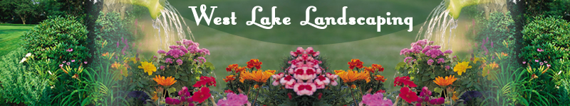

Use of Flowers in Landscape Design |
||
Adding Color to the Landscape |
||
Flowers accent a landscape design by adding color. Wisely used, flowers enhance a landscape design through symmetry as well as color. As the seasons change, annuals can be used to modify a seasonal theme. Flowers should be placed throughout the yard and varied from potted to planted in the ground in their own garden beds. When planning the gardens, start with deciduous trees or bushes for the primary focal point. Next, surround the trees or bushes with evergreens to have year round splash of green. Finally, place the flowers to add the other colors for the seasons. |
||